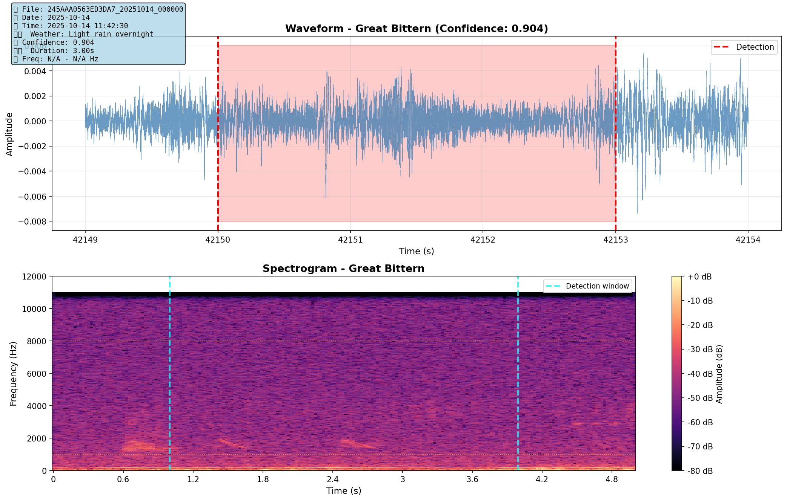
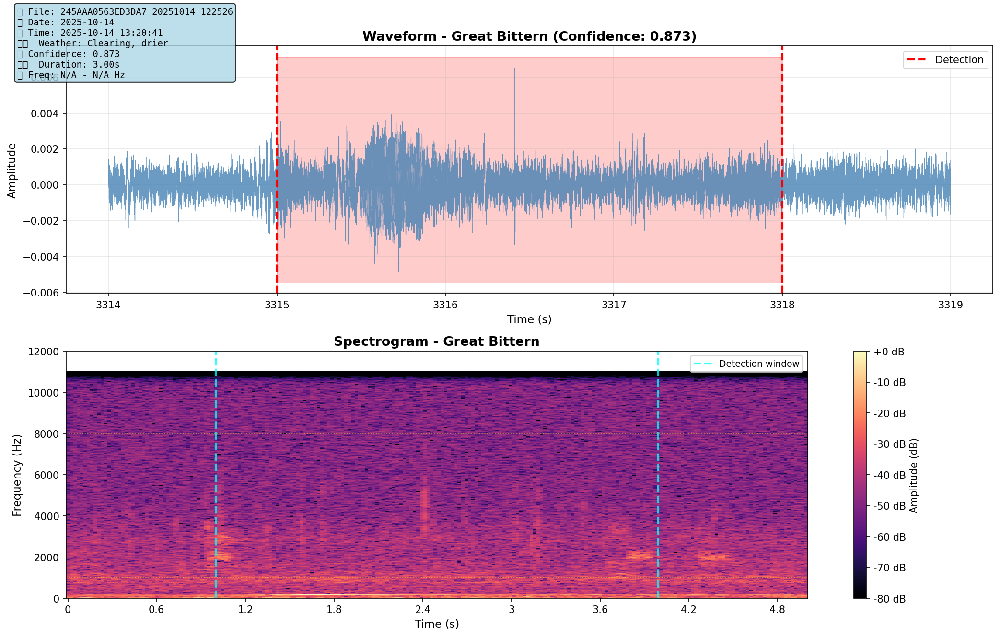
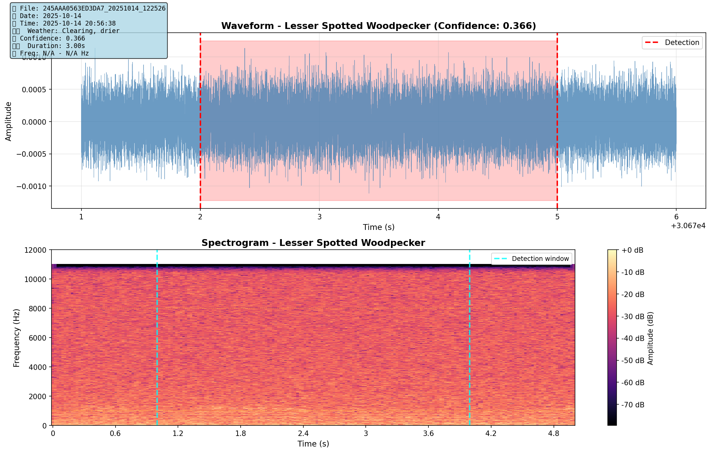
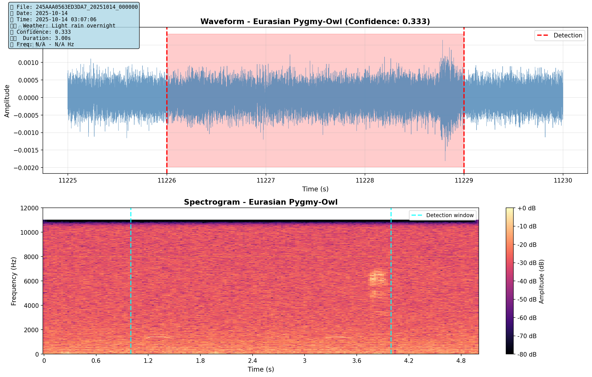
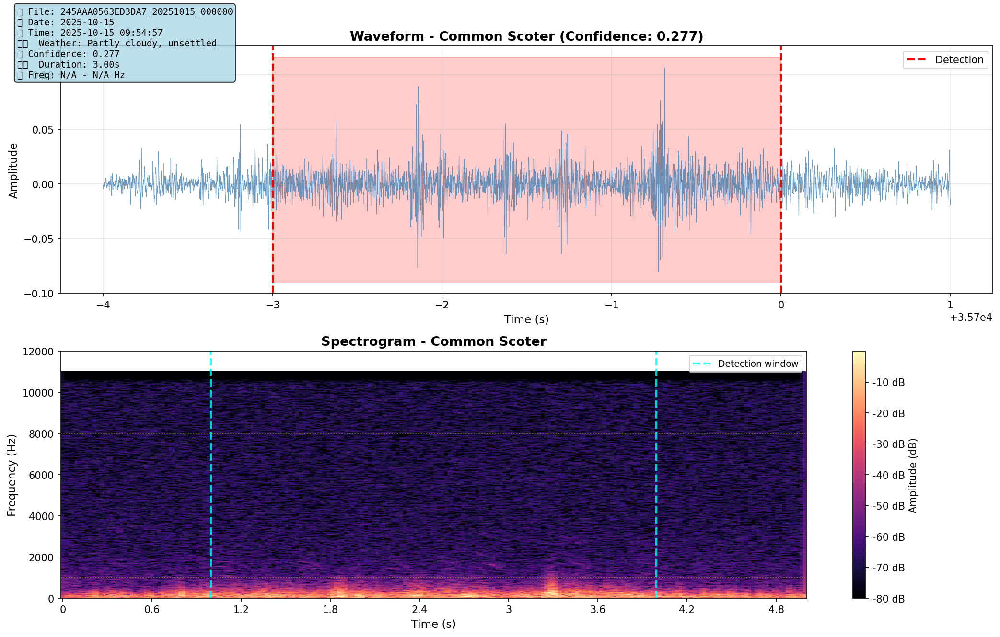

Spotted Crake (Rank #2 - 99.2% confidence)
Date: 2025-10-15 @ 00:00:00

Decision:
You previously rejected these 6 species. Here are their 2nd/3rd best examples to double-check your decision.
Instructions: Review each spectrogram/audio. If you find a valid bird call, we can add that species back to the verified list.
Date: 2025-10-15 @ 00:00:00
Date: 2025-10-14 @ 00:00:00
Date: 2025-10-14 @ 12:25:26
Date: 2025-10-14 @ 12:25:26
Date: 2025-10-14 @ 00:00:00
Date: 2025-10-14 @ 00:00:00
Date: 2025-10-15 @ 00:00:00
After reviewing, note down which species should be added back to the verified list.